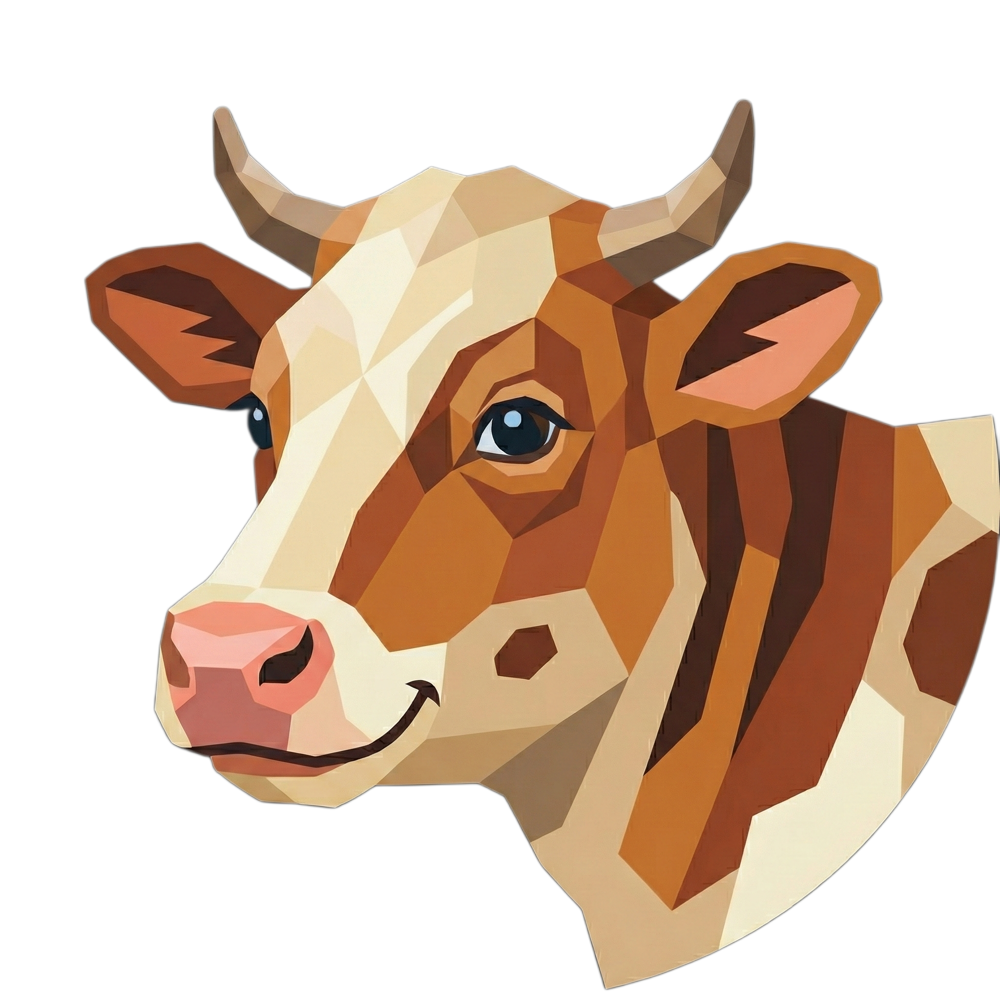
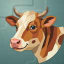
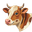
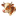
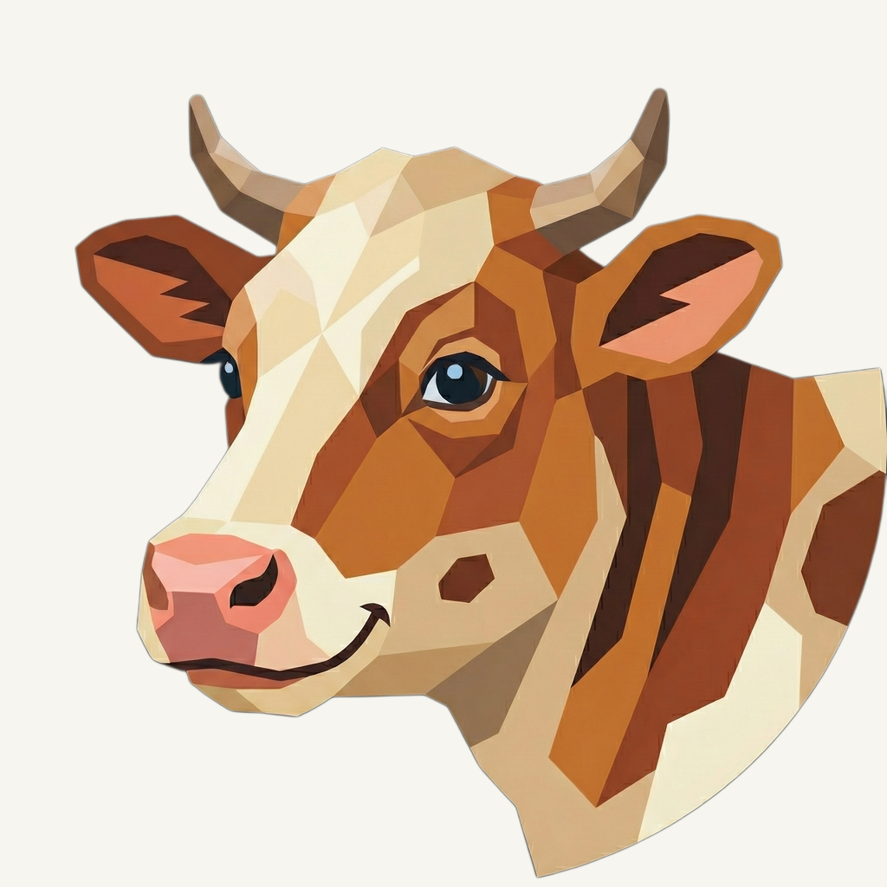
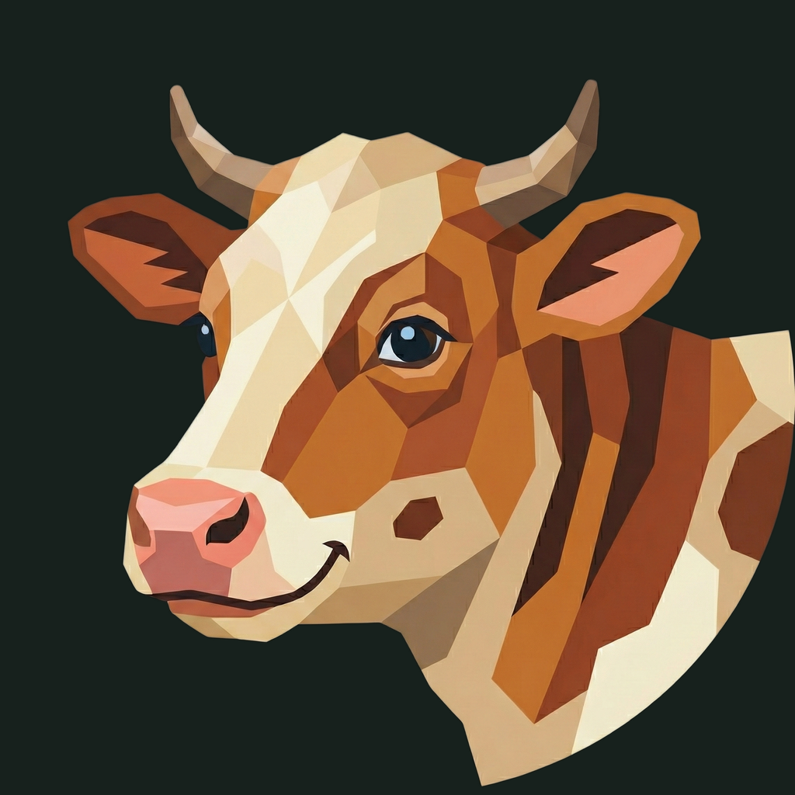

01 / Composition
Keep the gentle three-quarter view
The cow, horns, ears, expression, and original shoulder silhouette remain exactly as supplied. The warm animal stays prominent without changing its proportions.
Animal family · Refined presentation
The familiar warm cow, framed by quiet terraces in a cool green field.
Original artwork retained · finishing 01
Native 2048 × 2048

01 / Composition
The cow, horns, ears, expression, and original shoulder silhouette remain exactly as supplied. The warm animal stays prominent without changing its proportions.
02 / Drawing
The existing copper, cream, coral nose, and blue eye facets are retained. This presentation-only pass adds no accessory, repaint, or model generation.
03 / Presentation
Unequal stepped contours sit on a muted green field. Their broad rhythm and tiny lit edges contrast the warm cow while keeping the finance app UI palette separate.
Presentation tiles at 128/64 px; transparent artwork for small app and browser marks.



The cream blaze, horns, and coral nose anchor the 32 px silhouette. At 16 px smaller patches merge; browser and sidebar marks use the transparent source while installed-app icons use the presentation.
A designed background, with colors sampled from the untouched original.
Select a swatch to copy its hex value. The Noheir UI primary (#25AFF4) remains a separate product color.
One retained foreground, checked on two contrasting backgrounds.


Original artwork retained · zero generation calls · native 2048 × 2048
Loading brief…
The original animal was retained without a model request. These owner-provided boards guide the independently composed matte field, light, and shallow surface texture.


{kind=link}
{kind=link}
{kind=link}
{kind=link}
{kind=link}